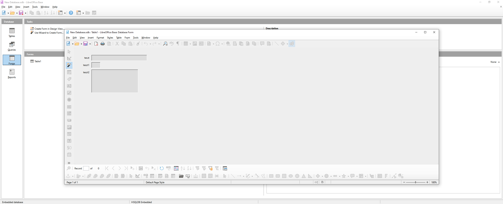

LibreOffice bemutató oldalak
https://hu.libreoffice.org/assets/HU_files/Basebevezeto31.pdf
https://documentation.libreoffice.org/assets/Uploads/Documentation/en/GS5.2/HTML/GS5201-IntroducingLibreOffice.html
http://akonyv.hu/libreoffice_elemei/libreoffice_base_3_minta.pdf
https://informatika.gtportal.eu/?f0=LinuxBase
Az űrlap az űrlaptündér befejezése után
